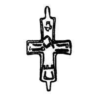

Catalog › CE-0548 · OLI-4
Valvă de encolpion cu Răstignirea încrustată, Duniv (Рис. 1, 4)
sec. XII (1101–1200) · Duniv, regiunea Ternopil, raionul Zalișcichi, Ucraina · Muzeul raional comunal de studii locale Zalișcichi (Заліщицький районний комунальний краєзнавчий музей, ЗРККМ), inv. ЗРККМ А 2788
single valve of a reliquary cross, bronz; c. XII (1101–1200); found at Duniv, regiunea Ternopil, raionul Zalișcichi, Ucraina; kept at Muzeul raional comunal de studii locale Zalișcichi (Заліщицький районний комунальний краєзнавчий музей, ЗРККМ).


Identificare
- Categorie
- Valvă izolată
- Material
- Bronz
- Tehnică
- Încrustație
- Dimensiuni
- Î 34 × L 23 mm
Iconografie
- Descriere avers
- Cruce cu capete lărgite și laturi teșite. Pe fața valvei s-a păstrat încrustația cu argint de calitate joasă, în stil niello, pe aproape toate părțile corpului Răstignirii: chip, mâini, picioare. Imaginea este parțial ștearsă.
Datare și atribuire
- Datare
- sec. XII (1101–1200)
Descoperire
- Localitate
- Duniv
- Regiune
- regiunea Ternopil, raionul Zalișcichi
- Țară
- Ucraina
- Context
- Așezare
- Anul
- 1987
- Coordonate
- 48.6437° N, 25.8901° E
- Precizia locului
- Doar localitatea
Păstrare și referințe
- Colecție
- Muzeul raional comunal de studii locale Zalișcichi (Заліщицький районний комунальний краєзнавчий музей, ЗРККМ)
- Nr. inventar
- ЗРККМ А 2788
- Bibliografie
- В. Олійник, В. Олійник, Знахідки давньоруських енколпіонів на півдні Тернопільщини, în „Матеріали і дослідження з археології Прикарпаття і Волині”, 12, 2008, p. 390–392 [Олійник, Олійник 2008], p. 390, Рис. 1, 4, reprodusă la Рис. 1, 4 (p. 391).
- Figura
- Рис. 1, 4
- Planșe
- Олійник, Олійник 2008, p. 391
- Analogii
- Encolpioane similare la Vasyliv, Zelenche și Kapustyntsi (Корзухина, Пескова 2003, p. 165, 167).
- Observații
- Valva mai bine păstrată dintre cele două din Duniv, găsită în 1987 de Vasîl Ukraiinețs în grădina sa. Dimensiuni: 4,4×2,3 cm cu urechi, 3,4×2,3 cm fără urechi. Sursa citează Олійник 1993, p. 27. Coordonate: ale localității (aproximative), nu date în sursă.
Citare: Corpus Encolpiorum, CE-0548, Valvă de encolpion cu Răstignirea încrustată, Duniv (Рис. 1, 4), --root/piese/OLI-4/ (accesat 2026-10-17).